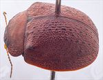
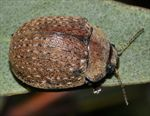
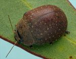
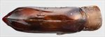
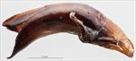
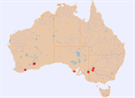

Click on images to enlarge
{kind=link}

Male, Mildura, New South Wales
{kind=link}

Female, Pinaroo, South Australia
{kind=link}

Female, Norseman, Western Australia
{kind=link}

Aedeagus, dorsal view (Pooncarie, New South Wales)
{kind=link}

Aedeagus, lateral view (Pooncarie, New South Wales)
{kind=link}

Distribution
Name
Trachymela cribrata (Blackburn)
Reference specimen
2011-166, Pooncarie, SW New South Wales.
Adult Description
Length: ♂ 9.4–10.3 mm (n=5), ♀ 9.7–10.3 mm (n=5).
Colouration:
- Head: frons mid- to reddish-brown, clypeus and region adjacent to eyes black, labrum straw-brown, mandibles usually completely black, sometimes reddish-brown with black base and apex; antennomeres 1–3 straw-brown, 4–11 concolorous with or slightly darker than basal segments, individual antennomeres usually with anterior edge darker.
- Pronotum: brown, concolorous with head, posterior half of lateral edge and most of anterior edge behind head black, sometimes black extending to most or all of anterior and lateral edges.
- Scutellum: dark brown or (rarely) black, always darker than adjacent area of pronotum, sometimes broadly edged in an even darker shade.
- Elytra: brown, concolorous with or (rarely) fractionally paler than disc of pronotum, punctures concolorous with interstices, several longitudinal series of small black verrucae present on elytral disc, some of these black spots rarely (very frequently in Western Australian specimens) extended longitudinally; humeral callus black.
- Venter & Legs: mid-head substantially black, thoracic and abdominal segments dark brown, rarely mid-brown, with areas around midline of thoracic segments often slightly darker, legs concolorous or fractionally darker, inner surface of elytral epipleura dark brown or black.
- Cuticular Wax: light brown and somewhat unevenly distributed, with a relatively thick coating on head and towards lateral margins of pronotum; on elytra, usually distributed much more sparsely though fairly evenly; dots of lighter-coloured, greyish cuticular wax present in spaces between black verrucae within longitudinal series (in Western Australian specimens these dots are very sparse or even absent and less constrained within series).
Morphology:
- Shape: quite evenly rounded and almost hemispherical (H/BL: ♂ 0.44–0.47, ♀ 0.46–0.50), highest point around or just in front of middle of elytral margin.
- Head: punctures moderately sized (pd ≈ 2–2.5× ef) and quite evenly and densely distributed; antennae moderately long (AL/BL: ♂ 40–43%, ♀ 37–38%), A4 ≥ A3, filiform.
- Pronotum: almost evenly curved transversely, foveal depression absent or very weak with foveal elevation absent; puncturation clearly impressed, similar in size or fractionally coarser than those on head, sometimes slightly uneven in size, closely and evenly distributed, rarely with a few smooth flat interstices interrupting, punctures becoming considerably coarser from around foveal area towards lateral margin; anterior margins join lateral margins in a smoothly rounded right-angle, with lateral margin initially almost straight for about 25% of length, then curving smoothly and gradually towards much thicker posterior margin.
- Scutellum: surface usually uneven, with a number of coarse but shallow punctures.
- Elytra: surface evenly curved, punctures distinct in anterior two-thirds, less so in posterior third where they become lost in closely-spaced granular interstices, relatively evenly distributed; scatter of smaller punctures on interstices; interstices raised, forming an interrupted network of short, thin ridges, many running transversely; several longitudinal series of small, raised, black, quite evenly spaced verrucae present, individual verrucae most often round but a few may be extended slightly longitudinally, verrucae usually fewer on portion of series anterior to antero-median depression, surface discontinuous under humeral callus; vertical extension of epipleura moderate (HCE/PW = 0.32–0.36).
- Venter: prosternal process narrow anteriorly or almost parallel-sided, closed anteriorly, short setae present sparsely over prostrenal process and mesoventrite; 1 to several setae on anterior and median trochanters, 1 on posterior trochanter; anterior edge of metaventrite beveled, truncate; inner edge of epipleura setose from about level with metathorax towards elytral apex, but rarely reaching it.
Male Genitalia (Aedeagus):
- Dimensions: relatively long (LPE/BL = 37–41%), round in cross-section and thick.
- Dorsal view: shaft almost parallel-sided from basal sulcus to about 75% of distance to apex with sides smooth or slightly uneven, from there convergence of sides towards apex is uneven, rapid initially then more gradually before finally increasing in rate to form a triangular spatula; dorsal surface smoothly curved with a well-defined and long dorso-median channel, dorsolateral channels relatively short and along lateral margins; dorsal ostial processes large with anterior edges oblique, most anterior point at or close to midline; ostial opening large, apex strongly protruding.
- Lateral view: shaft curved slightly just anterior to basal sulcus, then almost straight to about 25% from apex where ventral surface curves through almost 45° and its thickness decreases towards apex, apex prominent and deflexed.
Immature Stages
Unknown.
Similar species
- Ta91: dorsal colouration can be quite similar to that of Ta78, but easily distinguishable by the complete lack of elevated verrucae on the elytral disc.
- Ta124:
Notes
- Taxonomy: determination of this species as Trachymela cribrata (Blackburn) was made by comparison with the male type in the Natural History Museum, London (BMNH) and the original description. Ta78 belongs to a group of relatively large species (the alta group) found in the mallee regions of southern Australia, and is distinguished by the longitudinal series of black verrucae present on the elytral disc.
- Distribution & Abundance: distributed across mallee regions of southern Australia, with confirmed records from New South Wales, South Australia, and Western Australia.
- Host Associations: recorded from unspecified mallee eucalypt species, including Eucalyptus conglobata conglobata and E. dumosa (both Symphyomyrtus : Dumaria, series Rufispermae). Specimens from Western Australia were found on E. terebra (Symphyomyrtus : Bisectae, subsection Glandulosae) and possibly E. urna (Symphyomyrtus : Bisectae, subsection Destitutae).
- Morphological Variation: Western Australian specimens are likely distinct, but additional material is needed to say so definitively. Although interrupted black longitudinal series are present on the elytral disc in these specimens, they are composed of extended short lines rather than discrete elevated verrucae as seen in eastern Australian specimens. Greyish dots of cuticular wax are sparser and less constrained within the longitudinal series. The aedeagus of the Western Australian form differs in having a broader, more triangular spatula, and is approximately 5% longer than expected for its body size (noting the examined specimen was slightly teneral and its aedeagus somewhat distorted). Furthermore, the host tree for the Western Australian population belongs to a different section of Eucalyptus.
Copyright © 2026. All rights reserved.